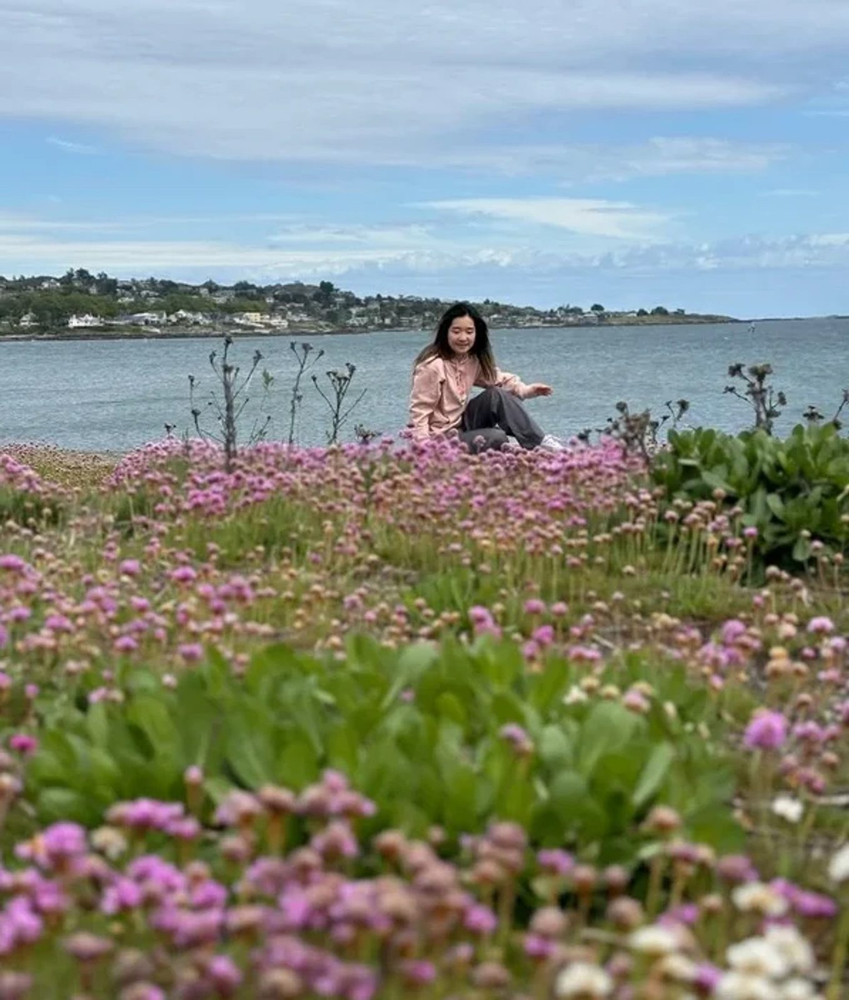
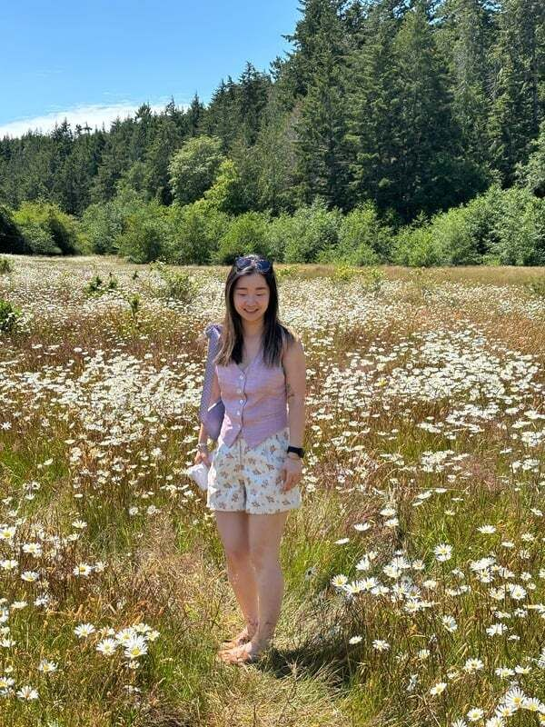
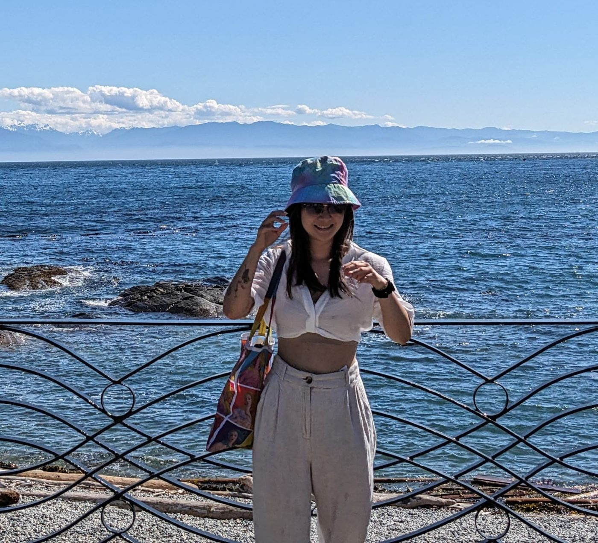
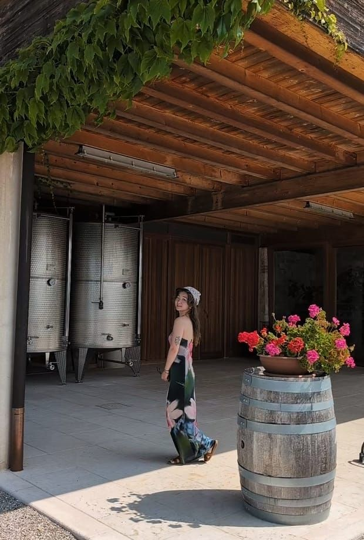
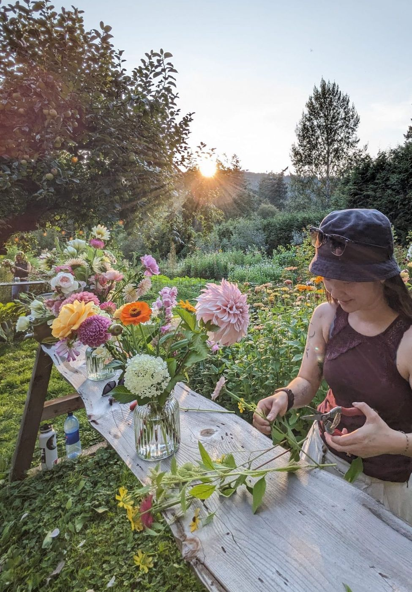
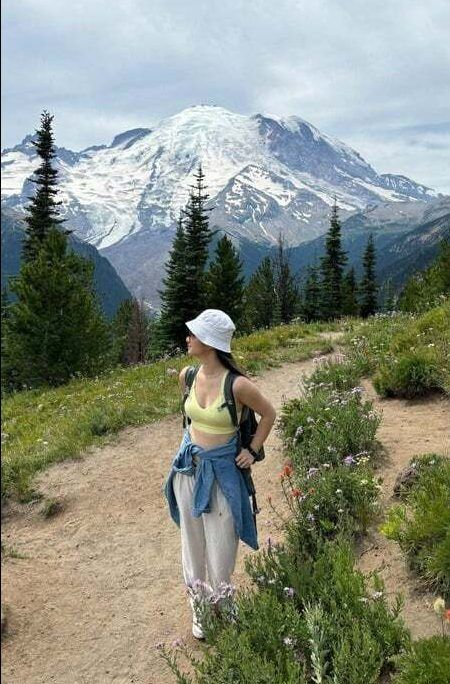
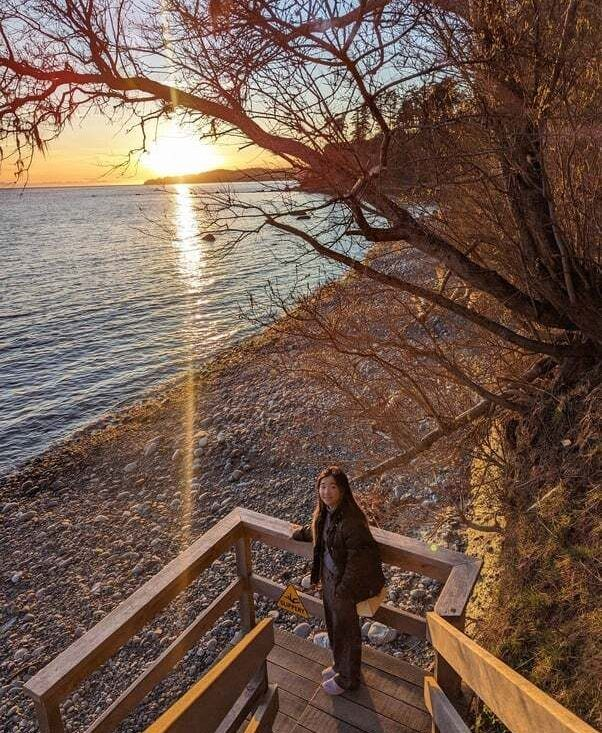
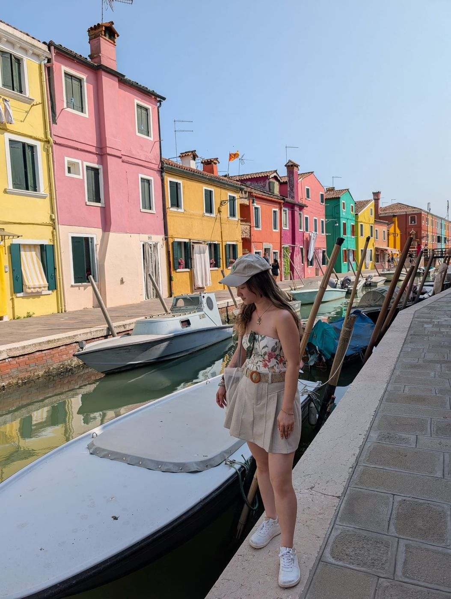

A curious multi-creative, learning along the way


Hi, I’m Faye — a content strategist, tech analyst, and curious human who believes in meaningful work and the honest exploration of creativity.
By day I work with editorial teams to create clear, search-friendly content that helps people grow their careers. Outside of work I paint abstract art, make pottery, and write poetry — ways I explore the subtler things words alone can’t always hold.
My creative practice lives between logic and intuition, weaving memory, emotion, and embodiment into form. This space is where all those parts of me meet: my professional writing portfolio, my art, and my ongoing journey to move through the world with colour, texture, rhythm, and wisdom.
Through it all, the common thread is connection — whether it’s helping someone make sense of their next career move or inviting them to feel something in a brushstroke. I care about the deeper why behind the work we do.
These days I’m learning to live beyond job titles. My creative work is intuitive, abstract, sometimes messy, and always honest. It’s an offering, a pause, a reminder that change can be beautiful — not just necessary.







Clear by day, felt by night
The editorial work and the studio work come from the same place: paying close attention, then making something people can hold on to.